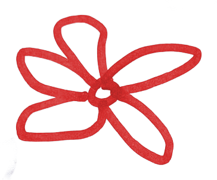

Solo un grande amore, un grande dolore, dentro una forte e tenera amicizia, per quanto fragile, fanno di un io un uomo.
Padre Aldo Trento
Solo un grande amore, un grande dolore, dentro una forte e tenera amicizia, per quanto fragile, fanno di un io un uomo.
Padre Aldo Trento

Chiesa SS Pietro e Paolo — Gerenzano, Varese
Fondazione Minoprio — Vertemate con Minoprio, Como

RSVPSe vuoi puoi aiutarci a costruire la nostra famiglia e contribuire al nostro viaggio di nozze in America!
IBAN
IT26X0538750430000004644208
INTESTATARIO
Marta Monti / Federico Pozzi
CAUSALE
Matrimonio Marta e Federico